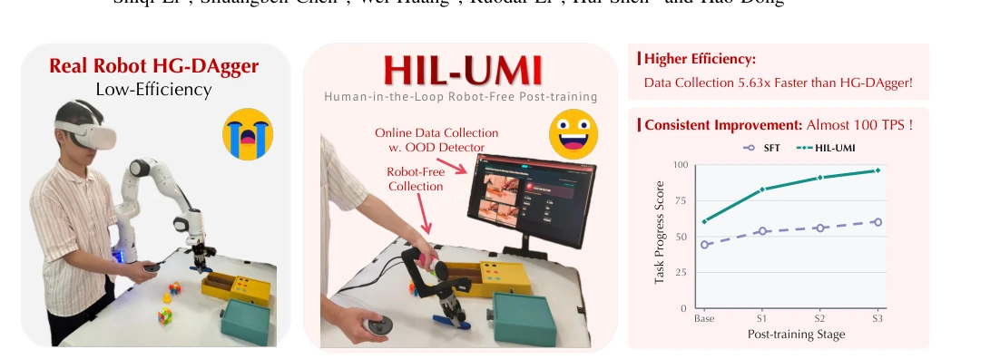
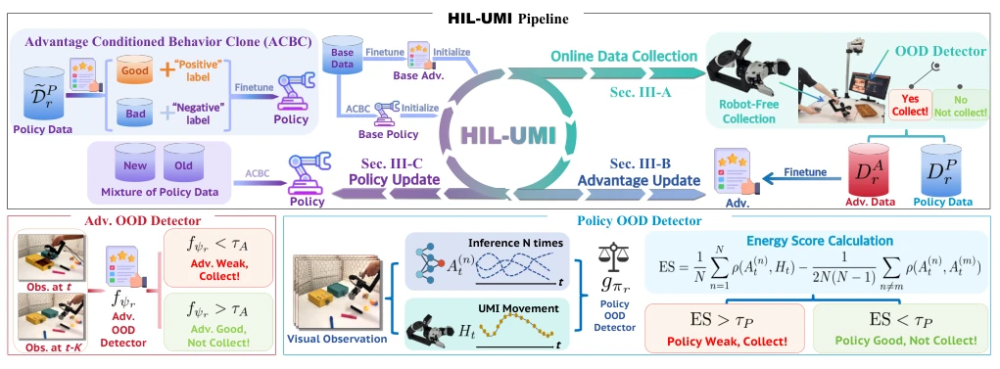
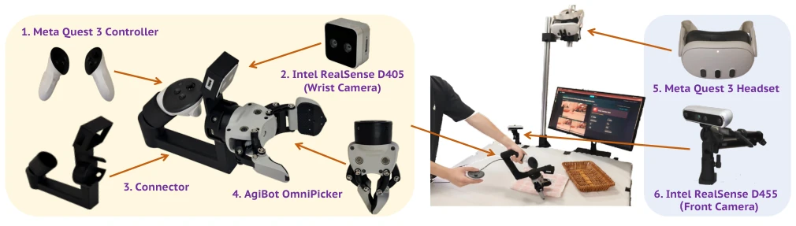
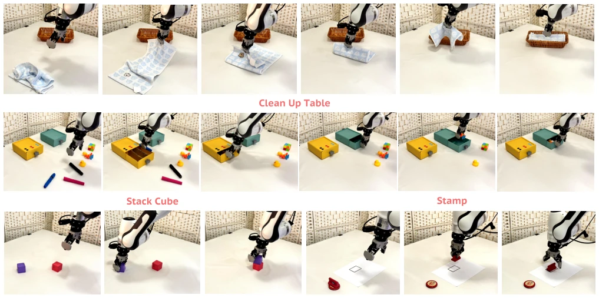
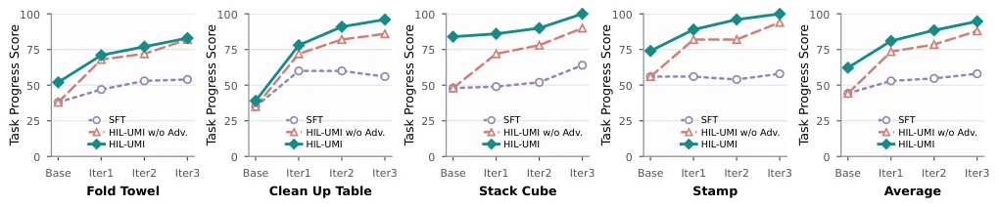
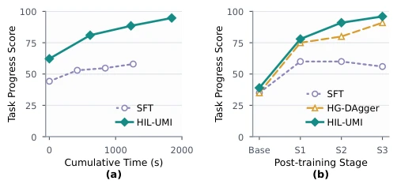

This paper adds a "hands-free" mode to VLA fine-tuning, attempting to liberate Human-in-the-Loop (HIL) from real hardware. Traditional HIL methods (such as HG-DAgger) require real hardware to run policies, and humans must watch closely beside them, with efficiency as low as squeezing into the subway during morning rush hours, and difficult to scale in parallel. HIL-UMI cleverly uses UMI handheld devices to replace real hardware execution; when humans operate, the policy only "sees" but does not "move", judging where data supplementation is needed through energy scores and advantage estimators. Although it sounds very promising, replacing real hardware interaction with handheld devices actually imposes high requirements on UMI hardware precision and synchronization, and the dual detector mechanism increases inference latency, potentially becoming a bottleneck for real-time performance. However, the 5.63 times improvement in data collection speed is indeed eye-catching, at least making distributed training possible, providing a new path for scalable post-training of VLA.
Large-scale VLA models [1], [2], although pre-trained with general priors, often fail to adapt when deployed to specific robots. Pure supervised fine-tuning (SFT) faces the problem of insufficient coverage of static data distributions, leading to easy accumulation of errors in OOD states for policies [13], [14]. Interactive post-training (such as DAgger [13], [19]) can address distribution shift, but relies on real hardware rollout and human intervention, with high hardware costs and difficulty in parallelization [26], [30]. UMI [31] provides the possibility of data collection without real hardware, but existing UMI methods lack feedback mechanisms targeting current policy blind spots, often focusing on data fidelity rather than policy weaknesses. HIL-UMI aims to resolve this contradiction, combining the iterative advantages of HIL with the portability of UMI, breaking free from dependence on physical robots to achieve scalable VLA post-training.

Fig. 1. Teaser. Real-robot HG-DAgger requires policy rollouts and human intervention on the robot, resulting in low collection efficiency. In contrast, HIL-UMI performs policy-guided, robot-free data collection with an online OOD detector, achieving higher performance with 5.63× faster data collection.
The overall process is divided into two parallel data flows: advantage model update and policy update. First, humans use UMI devices to demonstrate tasks, while the policy performs N random inferences on the same observation stream but does not execute. The Policy OOD detector calculates the Energy Score between human actions and the policy prediction distribution; exceeding the threshold marks it as OOD data for centralized policy updates. Meanwhile, the online advantage estimator fψ predicts relative task progress based on observations; low advantage segments are marked as "hard samples" for updating the advantage model. Subsequently, Advantage-Conditioned Behavioral Cloning (ACBC) is performed on the mixed dataset (base data + newly collected OOD data) using the updated advantage model. Advantage model training adopts a linear progress target, while policy updates are guided by positive and negative advantage labels. This design achieves policy-aware data filtering, completing iterations without real hardware intervention, and prevents catastrophic forgetting by mixing historical data.

Fig. 2. Overview of HIL-UMI. In each round, we first run advantage OOD detector online to collect advantage data. We then run the current policy OOD detector and collect policy data from segments. Next, we update the advantage estimator then using it to construct the advantage-labeled training dataset and update policy through ACBC.

Fig. 3. Hardware setup. Components of the custom UMI device and the corresponding data-collection setup.
Tests were conducted on 4 long-horizon or high-precision tasks such as Fold Towel and Clean Up Table on the Franka robotic arm. Baselines include SFT and HG-DAgger. The evaluation metric is Task Progress Score (TPS). Results show that HIL-UMI continuously improves on the basis of SFT, while SFT effects are limited. Compared with HG-DAgger, HIL-UMI's TPS is about 5 points higher on Clean Up Table, and the single-frame collection time is only 73.40ms, which is 5.63 times faster than HG-DAgger. Ablation studies show that removing the advantage model leads to significant performance degradation, and threshold settings need to balance coverage and selectivity. This proves the effectiveness of policy-aware collection and advantage-conditioned cloning, and hardware latency is within acceptable limits.

Fig. 4. Real-world evaluation tasks. We evaluate our HIL-UMI on four challenging real-world manipulation tasks with the Franka Panda robot arm.

Fig. 5. Real-world Experiment Results. We measure the task progress score (TPS) across post-training rounds on four long-horizon or high-precision real-world tasks for SFT, HIL-UMI without advantage, and HIL-UMI. We report the average over 4 tasks on the far right.

Fig. 6. Collection-time efficiency and comparison with HG-DAgger. (a) We report the average TPS and corresponding time cost over 4 real-world tasks for SFT and HIL-UMI collection. (b) We compare SFT, HG-DAgger and HIL-UMI on Clean Up Table and report the TPS for each round.